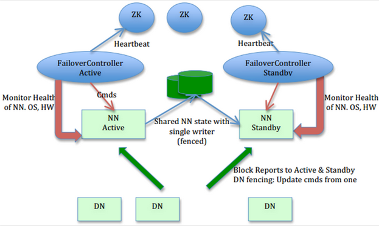
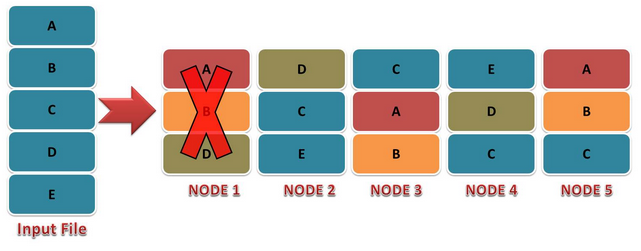
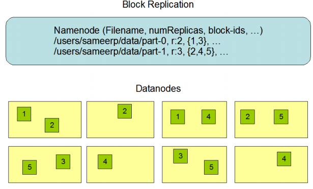

Syrian team in Raisoni
Syrian team in Raisoni
Hadoop Fault Tolerance
Introduction :
The concept of failure tolerance is defined as the ability of a system to continue to function properly without losing any data even if some components of the system fail to perform properly. 100% tolerance is very difficult to achieve but failures can be tolerated to some extent.
Both MapReduce and HDFS are designed to keep up with any system failure, as Hadoop continuously monitors the data stored in the cluster. If any of the servers become unavailable, the drive fails, or the data becomes corrupted due to hardware or software issues, HDFS automatically restores the same data from one of the other servers on which it was backed up when partitioning. Similarly, when an analysis is in progress, MapReduce monitors the progress on all servers participating in the process, and if one of these servers is slow to return the result or fails to complete its task, MapReduce immediately routes another server on which the same piece of data is stored on the first. As a result, because of the way HDFS and MapReduce work, Hadoop offers reliable, fail-safe and scalable servers for storing and analyzing data at very low cost.
HDFS Fault Tolerance :
HDFS is very fault tolerant and is designed to be deployed on low-cost hardware, so hardware failure is the rule rather than the exception. HDFS may contain hundreds or thousands of devices, each of which stores a piece of file system data, and the fact that there are so many components and that each component has an irreversible failure probability means that some HDFS components may be ineffective [1], Therefore, fault detection and fast automatic recovery from it is a primary goal of HDFS and the main purpose of the system is to remove common failures, which occur frequently and the system stops working, and the most important advantages of using Hadoop is that there are two main methods that are used to produce the tolerance With failures in data redundancy and checkpoints .
the three types of failures in HDFS are :
1> Failed master node (NameNode).
2> Data node failure (DataNode).
3> Network partitions fail.
2> Data node failure (DataNode).
3> Network partitions fail.
NameNode Failure and Fault Tolerance :
Without the NameNode the file system cannot be used so if the device running NameNode is wiped all files on the file system will be lost since there is no way to know how to rebuild the files from the blocks they are on DataNodes.
The master node represents a single point of failure (SPOF) and if it fails, all clients, including the MapReduce work, will not be able to read, write or list files because NameNode is the only repository of metadata and the link between each file and its block, in Such case the entire Hadoop system will be out of service until a new NameNode is fetched. This is why it is important to make the master node resilient to failure. Hadoop provides two mechanisms for this ...
Tolerance for master node failure is achieved in HDFS by :
1> Secondary Name Node (Hadoop1) :
The first method is to back up the files that make up the persistent state of the file system metadata. Hadoop can be set up so that the name node writes metadata to multiple file systems the setting that is usually chosen is to write to the local disk as well as to a remote NFS system. It is also possible to run a Secondary NameNode, Despite its name, it does not act as a name node. Its main role is to periodically merge the NameSpace Image with the EditLog to prevent the EditLog from becoming too large. The secondary name node is usually run on a physical machine Separate because it requires the same CPU and memory requirements as the name node to perform the merge and keeps a copy of the NameSpace Image that the changes were merged with, which can be used if the name node fails, However, the information contained in the secondary node is considered incomplete, so when the name node fails, only changes since the last check point of the secondary name node will be lost. The new name node will not be able to serve requests until (i) loads image its NameSpace in memory, (ii) re-apply its modification log, and (iii) receive enough block reports from name nodes to leave safe mode. In large clusters that contain many files and clusters, the start time of the name node can take about 30 minutes or more, which causes a major problem with the availability of the Hadoop distributed file system.
2> Standby Name Node(Haoop2) :
The combination of copying metadata on the name node on multiple file systems and using a secondary name node to create checkpoints protects against data loss, but does not give high file system availability [10] Hadoop2 dealt with this situation by providing support for high availability of HDFS By putting a pair of name nodes in active-standby mode, and in case the active name node fails, the standby node assumes its duties to continue serving customer requests without significant interruption, and there are some infrastructure changes necessary for this to happen, namely :
> The two name nodes must use high-availability shared storage to share the EditLog When any namespace modification is performed by the active node, it adds a new edit log to the edit log file stored in the shared directory. It applies it to its own namespace. In a failover case, the standby node ensures that all modifications are read from the shared volume before it is upgraded to the active state, and this ensures that the namespace state is fully synchronized before the failover .
> Data nodes must send block reports to both the name node and the standby node because the links between block mappings are stored in the master node's memory and not on disk.
> Clients should be set up to handle failures at the name node using a mechanism that is transparent to users.
> The two name nodes must use high-availability shared storage to share the EditLog When any namespace modification is performed by the active node, it adds a new edit log to the edit log file stored in the shared directory. It applies it to its own namespace. In a failover case, the standby node ensures that all modifications are read from the shared volume before it is upgraded to the active state, and this ensures that the namespace state is fully synchronized before the failover .
> Data nodes must send block reports to both the name node and the standby node because the links between block mappings are stored in the master node's memory and not on disk.
> Clients should be set up to handle failures at the name node using a mechanism that is transparent to users.
Failover and Fencing :
The transition from the active name node to the standby node is managed by a new entity in the system called a failover controller. There are many failover controllers, but by default Hadoop uses ZooKeeper to ensure that only one active name node is running at any one time. Each name node runs a single failover controller whose job it is to monitor it (using a simple heartbeat mechanism) and trigger a failover when it fails
The failure can also be initiated manually by the administrator, for example in the case of routine maintenance and this type of failure is called a desired failure. In the event of an unwanted failure it is impossible to confirm that the failure is caused by a shutdown of the active name node, for example a poor network can cause a failover transition [42] even though the active name node it thinks is still running it is still the active name node. The process of ensuring that the previously active name node will not harm or corrupt the system is called fencing. QJM only allows one name node to write to the edit log at a time, however the previously active name node can still serve read requests. So, it is a good idea to set up an SSH fencing command that will kill the name node and a previously active node's access to the shared file system can be revoked by disabling its network port by remote commands.

DataNode Failure and Fault Tolerance :
Each data node sends a Heartbeat message to the name node periodically (every 3 seconds) which means it is working properly, network failure or data node failure can cause the name node not to receive the Heartbeat message, if the name node does not receive a heartbeat message for Ten minutes The data node is dead and its data is unavailable to HDFS and the name node does not forward any new IO requests to it, The death of a data node may cause the replication factor of some blocks to drop below the specified value, the name node constantly tracks which blocks need to be replicated and starts copying whenever needed, the need for replication may arise due to many reasons: The data node may become unavailable , the replica may get corrupted, the data node's hard disk may fail, or the file replication factor may increase.

Data Block Replication :
HDFS is designed to reliably store very large files across devices in a large cluster. It stores each file as a sequence of blocks. All blocks in the cluster are the same size except for the last block in the file. File blocks are replicated in order to achieve failure tolerance, reliability, and high availability. The block size and replication factor can be specified for each file, the application can specify the number of file replicas, and the replication factor can be specified at the time of file creation and can be changed later.
By default, the HDFS replication factor is 3. The name node makes all decisions about block redundancy and periodically receives heartbeat messages and block reports from each of the data nodes in the cluster. A heartbeat is received indicating that the data node is working properly as a block report contains a list of all blocks on the data node .Data redundancy provides instant recovery from failure but to achieve such tolerance a large amount of memory is consumed in storing data on different nodes meaning a large amount of memory and resources is wasted. But because this technology provides instant and quick recovery from failures, so it is used more frequently compared to checkpoints. It is possible that the data block fetched from the DataNode was corrupted due :
> Storage device malfunctions.
> Network malfunctions.
> Buggy software.
> Storage device malfunctions.
> Network malfunctions.
> Buggy software.
When the client creates an HDFS file, it calculates a Checksum for each block and stores it in a separate hidden file in the same HDFS namespace. When the client retrieves the contents of the file, it verifies that the data it received from each DataNode matches the stored Checksum. If not, the client can choose to retrieve this block from another DataNode that contains a copy of that block.

Large HDFS clusters contain a group of computers that are commonly spread across many racks and communication between two nodes in different shelfs must pass through network switches. Switches In most cases the network bandwidth between devices in the same shelf is greater than the network bandwidth between devices in different shelfs. The name node specifies the ID of the shelf on which each data node is located.
The policy of placing replicas on unique racks is simple but not perfect as it prevents data loss when the entire shelf fails and allows bandwidth from multiple shelfs to be used when reading data. This policy distributes replicas evenly in the cluster, making it easier to balance the load. But it increases the cost of writing because writing needs to move the blocks to multiple racks. So in the common case when the replication factor is three:
> A copy is placed on a node in the local shelf.
> Another version is placed on a knot in a different remote shelf.
> The last are placed in a different node on the same remote shelf.
This policy does not affect data reliability because the chance of a node failure is much greater than a shelf failure. HDFS attempts to fulfill the read request from the copy closest to the reader in order to reduce overall bandwidth consumption and read delay. If there is a copy on the same shelf of the reading node, it should be the copy that satisfies the read request.
> A copy is placed on a node in the local shelf.
> Another version is placed on a knot in a different remote shelf.
> The last are placed in a different node on the same remote shelf.
This policy does not affect data reliability because the chance of a node failure is much greater than a shelf failure. HDFS attempts to fulfill the read request from the copy closest to the reader in order to reduce overall bandwidth consumption and read delay. If there is a copy on the same shelf of the reading node, it should be the copy that satisfies the read request.
Hadoop MapReduce Fault Tolerance :
In fact, user code may contain errors, processes may crash, and devices may fail. Hadoop has the advantage of handling such failures and allowing work to be completed successfully despite the failure. Failure includes any of the following entities: task, application manager, node manager and resource manager .
Task Failure :
The first and most common case of task failure is when user code throws a runtime exception. If this happens, its JVM returns the error to its application manager before it exits. The error is logged into the user logs. Then the application manager marks the task as a failed task, and frees the container so that its resources are available for another task.
The second case of failure is the JVM's abrupt exit. There may be a JVM error that is causing the JVM to terminate due to a certain set of circumstances for which the MapReduce user code is exposed. In this case, the node manager notices that the process has exited and reports the main application manager to determine that this attempt has failed.
Suspended tasks are treated differently as the application manager notices that it has not received a progress update for some time and proceeds to determine the task as failed, and the JVM process of the tasks will be killed automatically after this period, the timeout period after which the failed tasks are usually 10 minutes and can be configured on All-action basis (or group basis) by setting the mapreduce.task.timeout property to a value in milliseconds.
Giving the timeout a value of zero disables the timeout so that long-running tasks are not flagged as failed. In this case, suspending the task will never release its container, and over time the cluster may slow down as a result. So this approach should be avoided, and ensure that the task reports its progress periodically.
When the application manager is notified that a task attempt has failed, it will reschedule the execution of the task, the application manager will try to avoid rescheduling the task on the manager of a node on which it has already failed. Moreover, if a task fails four times, it will not be rescheduled again. This value is configurable as the maximum number of attempts to run a task is controlled by the MapReduce property. map.maxattempts for corresponding tasks and mapreduce.reduce.maxattempts for reduction tasks and by default if any task fails four times the whole work will fail.
Application Master Failure :
As in MapReduce tasks that are given multiple attempts to succeed (in the face of hardware or network failure) the applications are retried in YARN in case of failure the maximum number of attempts to run the MapReduce application manager is controlled by the property mapreduce.am.max -attempt default value is 2. So if a master application manager fails twice it will not be tried again and the work will fail, the recovery process is as follows: Application manager sends periodic pulses to the resource manager and in the event of a failure in the application manager, the resource manager will detect the failure and start a new instance of the application manager under a new container (They are managed by the node manager).
Node Manager Failure :
If the node manager fails by crashing or running too slowly it will stop sending the heartbeat to the resource manager (or send it infrequently), the resource manager will notice that the node manager has stopped sending heartbeats if it does not receive a heartbeat message for ten minutes it will delete it from List of nodes to which containers will be scheduled, any task or application manager running on the failed node manager will be retrieved using the above mechanisms. Additionally the application manager arranges the restart of corresponding tasks that have been successfully run and completed on the failed node manager to be restarted if they belong to uncompleted works since their staging outputs on the local file system of the failed node manager may not be accessed by tasks reduction, a node manager may be blacklisted if the number of application failures is high, even if the node manager itself has not failed. The blacklist is accomplished by the application manager.
Resources Manager Failure :
The failure of the resource manager is dangerous because without it it is not possible to launch works or task containers before Hadoop 2.4 The resource manager was considered a single point of failure, since in the (unlikely) event of a hardware failure all running works fail and cannot be recovered. To achieve high availability (HA) it is necessary to run a pair of standby and active resource managers, if the active resource manager fails, the standby manager will take his turn as quickly as possible so that there is no significant interruption of the client.
Information about all running applications is stored in a highly available state store (powered by ZooKeeper or HDFS) so that a prepared resource manager can retrieve the failed active resource manager's base state. It can be rebuilt relatively quickly by the new resource manager when node managers send their first heartbeats. Also note that tasks are not part of the resource manager state, since they are managed by the application manager.